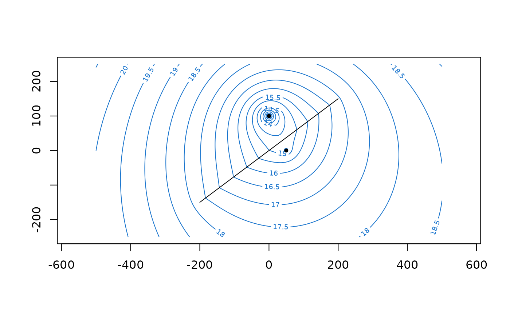

aem() creates an analytic element model to which elements can be added
solve.aem() solves the system of equations as constructed by the elements in the aem model
plot.element() plots the location of an analytic element with point or line geometry.
plot.aem() plots the locations of all analytic elements with a point or line geometry
in an aem object by calling plot.element() on them, or adds them to an existing plot.
Usage
aem(
k,
top,
base,
n,
...,
type = c("variable", "confined"),
verbose = FALSE,
maxiter = 10
)
# S3 method for class 'aem'
solve(a, b, maxiter = 10, verbose = FALSE, ...)
# S3 method for class 'element'
plot(
x,
y = NULL,
add = FALSE,
pch = 16,
cex = 0.75,
use.widths = TRUE,
col = "black",
xlim,
ylim,
...
)
# S3 method for class 'aem'
plot(x, y = NULL, add = FALSE, xlim, ylim, ...)Arguments
- k
numeric, hydraulic conductivity of the aquifer.
- top
numeric, top elevation of the aquifer.
- base
numeric, bottom elevation of the aquifer.
- n
numeric, effective porosity of the aquifer as a fraction of total unit volume. Used for determining flow velocities with
velocity().- ...
for
aem(), objects of classelement, or a single (named) list withelementobjects. Otherwise, ignored.- type
character specifying the type of flow in the aquifer, either
variable(default) orconfined. See details.- verbose
logical indicating if information during the solving process should be printed. Defaults to
FALSE.- maxiter
integer specifying the maximum allowed iterations for a non-linear solution. Defaults to 10. See details.
- a
aemobject.- b
ignored
- x
aemobject, or analytic element of classelementto plot. If not a point or line geometry, nothing is plotted.- y
ignored
- add
logical, should the plot be added to the existing plot? Defaults to
FALSE.- pch
numeric point symbol value, defaults to
16. For a reference point, a value of4is used.- cex
numeric symbol size value, defaults to
0.75.- use.widths
logical, if line elements with non-zero width are plotted, should they be plotted as polygons including the width (
TRUE; default) or as infinitesimally thin lines (FALSE)?- col
color of element. Defaults to
'black'.- xlim
numeric, plot limits along the x-axis. Required if
add = FALSE.- ylim
numeric, plot limits along the y-axis. Required if
add = FALSE.
Value
aem() returns an object of class aem which is a list consisting of k, top, base, n,
a list containing all elements with the names of the objects specified in ..., and a logical solved
indicating if the model is solved.
solve.aem() returns the solved aem object, i.e. after finding the solution
to the system of equations as constructed by the contained elements.
Details
The default type = 'variable' allows for unconfined/confined flow, i.e. flow with variable saturated thickness. If type = 'confined',
the saturated thickness is always constant and equal to the aquifer thickness. This results in a linear model when head-specified elements with
a resistance are used, whereas type = 'variable' would create a non-linear model in that case.
solve.aem() is called on the aem object before it is returned by aem(), which solves the system of equations.
Solving
solve.aem() sets up the system of equations, and calls solve() to
solve. If head-specified elements are supplied, an element of class constant as
created by constant() (also called the reference point), should be supplied as well.
Constructing an aem object by a call to aem() automatically calls solve.aem().
If the system of equations is non-linear, i.e. when the flow system is unconfined (variable
saturated thickness) and elements with hydraulic resistance are specified, a Picard iteration is entered.
During each Picard iteration step (outer iteration), the previously solved model parameters are used to set up and
solve a linear system of equations. The model parameters are then updated and the next outer iteration step is
entered, until maxiter iterations are reached. For an linear model, maxiter is ignored.
Plotting
If the analytic element has a point geometry and has a collocation point
(e.g. headwell()), that point is also plotted with pch = 1.
A reference point (as created by constant()) is never plotted when plotting the model
as it is not a hydraulic feature. Area-sinks (as created by areasink() or headareasink())
are also never plotted as they would clutter the plot. These elements can be plotted by
calling plot() on them directly.
Examples
k <- 10
top <- 10
base <- 0
n <- 0.2
TR <- k * (top - base)
w <- well(xw = 50, yw = 0, Q = 200)
rf <- constant(xc = -500, yc = 0, h = 20)
uf <- uniformflow(gradient = 0.002, angle = -45, TR = TR)
hdw <- headwell(xw = 0, yw = 100, rw = 0.3, hc = 8)
ls <- linesink(x0 = -200, y0 = -150, x1 = 200, y1 = 150, sigma = 1)
# Creating aem ----
m <- aem(k, top, base, n, w, rf, uf, hdw, ls)
# or with elements in named list
m <- aem(k, top, base, n,
list('well' = w, 'constant' = rf, 'flow' = uf, 'headwell' = hdw, 'river' = ls),
type = 'confined')
# Solving ----
m <- solve(m)
# solving requires a reference point (constant) element if head-specified elements are supplied
try(
m <- aem(k = k, top = top, base = base, n = n, w, uf, hdw)
)
#> Error : Please provide an element of class 'constant' when solving for unknown parameters in elements
# Plotting ----
plot(ls)
plot(w, add = TRUE)
plot(uf) # empty
plot(m, xlim = c(-500, 500), ylim = c(-250, 250))
xg <- seq(-500, 500, length = 200)
yg <- seq(-250, 250, length = 100)
contours(m, x = xg, y = yg, col = 'dodgerblue', nlevels = 20)
plot(m, add = TRUE)
